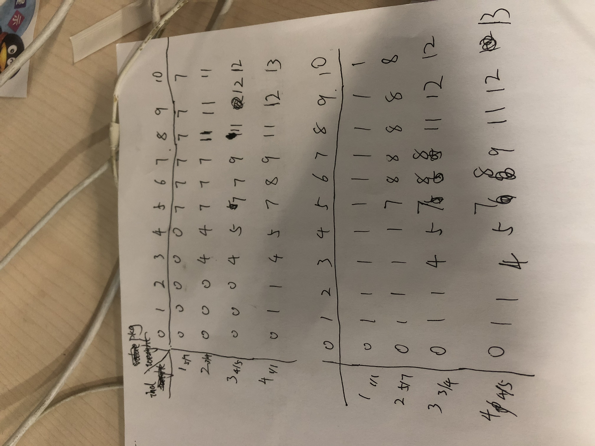

四个物品重量和价值分别是
[{weight: 5, value: 7}, {weight: 3, value: 4}, {weight: 4, value: 5}, {weight: 1, value: 1}]
最优解的计算机运行过程和物品顺序无关
核心是要想明白：
- 对于新物品，每次要么装，要么不装
- 对于新物品，每次要么装，要么不装
- 包里已有的物品，是对于上一指定空间装入物品的最有解
- 我要计算的，就是对于当前背包空间，新来的物品装或者不装的最优解。所以我是在上一个最优解的基础上继续计算下一个最优解的
